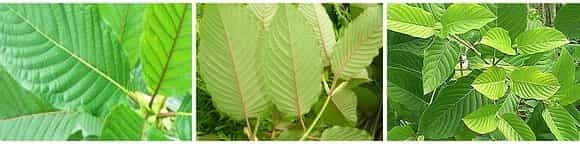

Sponsored Article is ROK's official account that publishes sponsored articles from advertisers. If you are interested hiring a sponsored article for your site, product, or service, visit our advertising page.


Return Of Kings readers are probably already aware of Kratom and all of the amazing benefits this magical plant provides. With all of the different types and strains of Kratom available on the market, it’s important to know which ones to purchase in order to treat specific symptoms, or to achieve specific goals.
What’s most confusing about finding the correct strains for your needs is the fact that there are no established or standardized naming conventions for the different strains. To further complicate matters, many vendors give their own Kratom products and blends branded names, so there are sometimes dozens of different names for the same products.
The easiest and most common way to differentiate strains is using the naming system the farmers and plantations in southeast Asia typically use: color of vein + area of origin.
All Kratom can be broken down into three types, based on the color of the vein on the leaves: red, white, and green. There are also horn varieties, yellows, and golds, but these are marketing tricks or variations on drying methods for the main three.

Though there are now myriad hybrid and exotic strains of Kratom and it is now grown in many different countries, all Kratom plant genetics trace back to three countries: Malaysia (aka Malay), Thailand (aka Thai), and Indonesia (aka Indo).
Maeng Da strains are said to originate from a specific plantation in Indonesia that marketed their product as “genetically grown,” manipulating plant DNA to create the perfect Thai strain. The strain itself was lost, but through hybrid crossbreeding, the higher potency genes have survived and are frequently crossed with local varieties to create a “Maeng Da” (literally, “pimp grade”) potency. These days, Maeng Da isn’t a strain so much as a marker of a very powerful Kratom strain.
Now we can discuss the best Kratom strains for specific symptoms you may be experiencing…
Amount to burn: moderate (2-4.5 grams) to high (4.5-8 grams)
These are useful for unwinding after a long day of work, or for helping you sleep.
Amount to burn: moderate (2-4.5 grams) to high (4.5-8 grams)
Amount to burn: moderate (2-4.5 grams)
Amount to burn: moderate (2-4.5 grams) to high (4.5-8 grams)
Amount to burn: moderate (2-4.5 grams)
Amount to burn: moderate (2-4.5 grams) to high (4.5-8 grams)
For the flu or a cold, many take kratom at the first sign of symptoms to dramatically reduce their downtime.
Amount to burn: low (1-2 grams) to moderate (2-4.5 grams)
If you want to crush your obstacles and achieve your goals, make sure you enhance your body and mind in equal amounts, and as naturally as possible. Kratom is one of those hidden jewels that make the difference between a good man and a great one. Much like anything else, it’s a tool, not a toy, and should be treated with respect. That’s why it’s important to make sure you have the right tool for the job, and the right Kratom for the symptoms you’re hoping to overcome. With the right strains, the sky really is the limit.
Island Lion Herbals offers sophisticated relaxation for upscale clientele. All of our premium Kratom powder is imported directly from the source in southeast Asia and is organic, lab-tested, and contaminant-free.
To celebrate our grand opening, Island Lion Herbals is offering a special discount code for Return Of Kings readers. Just input coupon code: ROK15 for 15% off your purchase at our online store. Click here to visit our online store.
Follow @ILHerbals on Twitter or like our Facebook fan page for exclusive giveaways and discounts. You can also add us as a friend on add us as a friend on Facebook.
Disclaimer: These statements have not been evaluated by the FDA. These products are not intended to diagnose, treat, cure, or prevent any disease. Kratom is not meant for human consumption. Click here to visit Island Lion Herbals.